The visual collection
Alexandra
in view.
Look closer at the images and visual ideas shaping this archive. Read each caption alongside the image.
This collection contains 20 distinct AI-generated artworks: imagined scenes and symbolic heritage illustrations. They are not authenticated historical photographs.
A closer look.
20 images in this collection

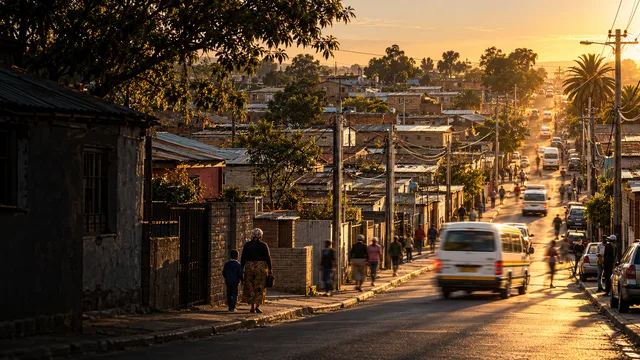
Streets and change
Alexandra at golden hour
An imagined street scene evokes everyday movement in Alexandra. It is not evidence of a specific street, event or date. (Mashimbye, 2026a; Sowetan, 2019).

Streets and change
A road through changing times
This conceptual transition considers infrastructure and continuity. It is not a verified reconstruction of Alexandra at different dates. (Mashimbye, 2026b).

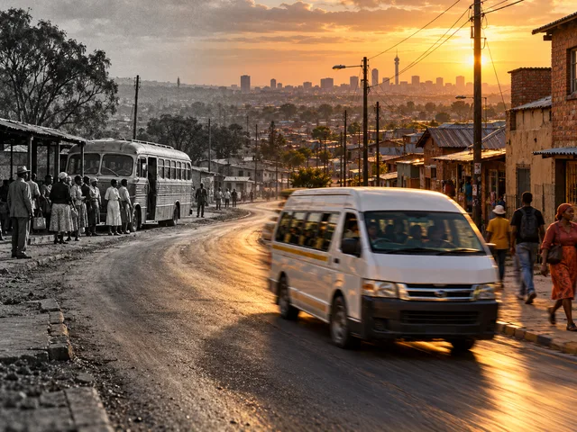
Streets and change
From bus stop to minibus
An imagined transport comparison connects past and present. The depicted bus, street and passengers are illustrative. (Mashimbye, 2026c).

Streets and change
Alexandra from above
A generated interpretation of an elevated view invites visitors to consider the scale and texture of a neighbourhood. (Mashimbye, 2026d).

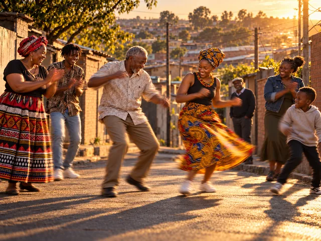
People and culture
Generations in rhythm
An imagined celebration brings different generations together. The dancers are not identified residents and this is not a record of a particular cultural event. (Mashimbye, 2026e).

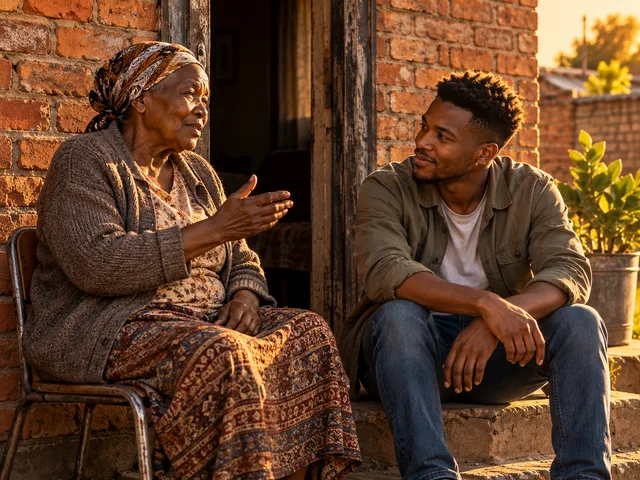
People and culture
A conversation on the doorstep
A fictional conversation represents intergenerational listening. It is not a recorded interview or resident testimony. (Mashimbye, 2026f).

People and culture
The people at the centre
A symbolic community motif places people at the centre of shared heritage. The faces do not identify historical residents. (Mashimbye, 2026g).

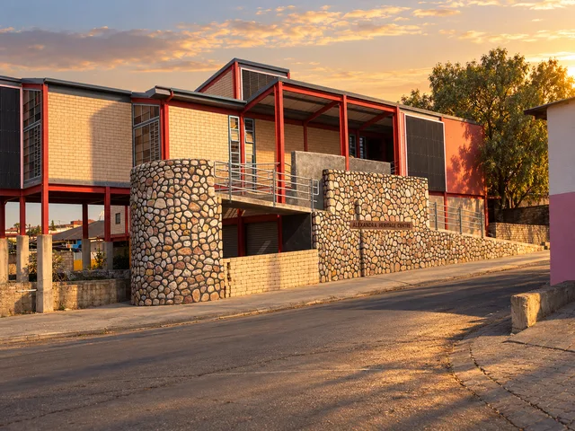
Places and landmarks
Alexandra Heritage Centre: an interpretation
An AI interpretation based on the Heritage Portal reference photograph of the Alexandra Heritage Centre. Architectural details may differ from the real building. (Mashimbye, 2026h; The Heritage Portal, n.d.).

Places and landmarks
Mapping memory
A symbol for exploring meaningful places. The lines are decorative and must not be used for navigation. (Mashimbye, 2026i).

Places and landmarks
Finding a way into history
The compass and book represent discovery through reading and place. The surrounding buildings are symbolic. (Mashimbye, 2026j).

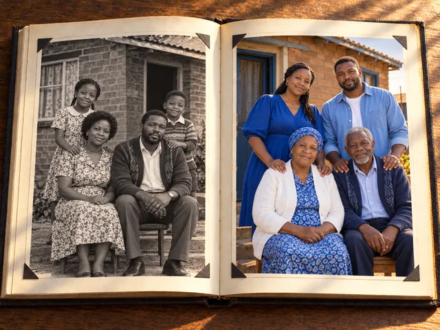
Family and memory
One family, two chapters
An imagined family album explores ageing and continuity. Neither portrait is an authentic family record. (Mashimbye, 2026k).

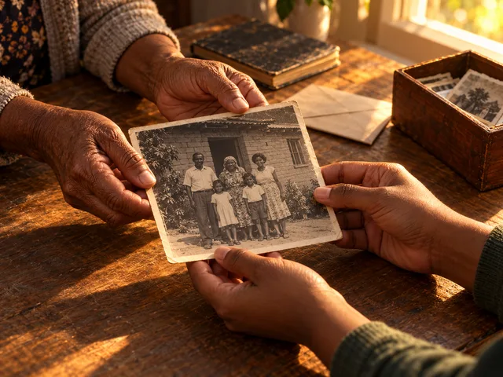
Family and memory
What one generation passes on
The exchange of a photograph represents passing memories between generations. The print inside this scene is also generated. (Mashimbye, 2026l).

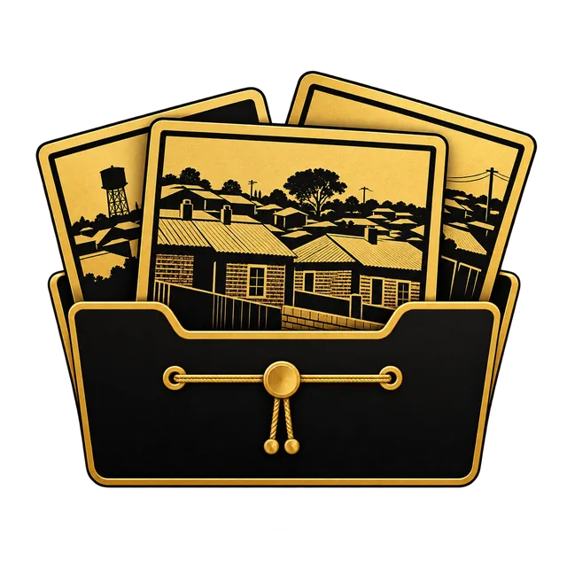
Family and memory
What we choose to keep
A decorative folder suggests the choices involved in preserving visual memories. Its contents are not authentic archival objects. (Mashimbye, 2026m).

Family and memory
Heritage in caring hands
Hands and a book express care for shared memory. The image is a symbolic illustration, not a historical reconstruction. (Mashimbye, 2026n).

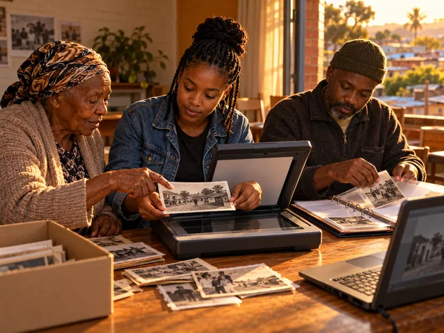
Archives and heritage
Building a neighbourhood archive
An imagined archiving session shows how people might organise and digitise family material. It does not document a real archive programme. (Mashimbye, 2026o).

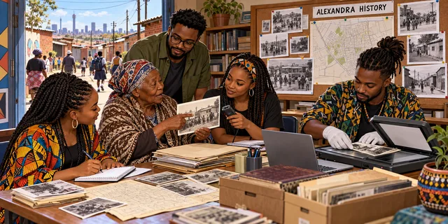
Archives and heritage
History around a shared table
A fictional collaborative research scene represents the project’s community-centred aims. It is not a photograph of the project team. (Mashimbye, 2026p).

Archives and heritage
Learning through heritage
A symbolic connection between education and community history. It does not represent accreditation or a real teaching programme. (Mashimbye, 2026q).

Archives and heritage
Remembering collective action
This symbolic artwork suggests collective memory and public action. It does not record a specific protest, meeting or date. (Mashimbye, 2026r).

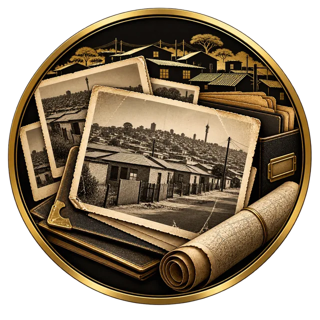
Archives and heritage
Traces worth preserving
Illustrated prints and documents suggest the different materials an archive might preserve. They are not authenticated historical records. (Mashimbye, 2026s).

Archives and heritage
Keeping the story alive together
A symbolic invitation to work together in caring for heritage. No actual sponsor, agreement or partnership is implied. (Mashimbye, 2026t).
No matching images.
Try a different word, another theme or clear your search and filters.
Images carry meaning
Look at the image.
Read its context.
An illustration can express an idea without recording an event. Captions explain what is known about each image and where information remains incomplete.
Help grow the visual record.
Have a photograph connected to Alexandra? Tell us what it shows, when it was made and who created it. Permission and source checks are needed before any contribution can be published.
Enquire about an image contribution ↗ Return to the archive directory ↗Credits and source records
Behind the images.
These records identify the project artworks, not authenticated archive holdings. Individual generation-platform records and conversation links remain to be completed in the project media register. No online generation URL or access date is invented.
Image references: 20 project artworks
- Mashimbye, M., 2026a. Alexandra at golden hour. [AI-generated project artwork] Local project file:
images/hero-image.png. - Mashimbye, M., 2026b. A road through changing times. [AI-generated project artwork] Local project file:
images/timeline.png. - Mashimbye, M., 2026c. From bus stop to minibus. [AI-generated project artwork] Local project file:
images/timelapse.png. - Mashimbye, M., 2026d. Alexandra from above. [AI-generated project artwork] Local project file:
images/viewpoint.png. - Mashimbye, M., 2026e. Generations in rhythm. [AI-generated project artwork] Local project file:
images/people.png. - Mashimbye, M., 2026f. A conversation on the doorstep. [AI-generated project artwork] Local project file:
images/conversations.png. - Mashimbye, M., 2026g. The people at the centre. [AI-generated project artwork] Local project file:
images/Alexandra community heritage medallion.png. - Mashimbye, M., 2026h. Alexandra Heritage Centre: an interpretation. [AI-generated project artwork] Local project file:
images/alexandra-centre.png. - Mashimbye, M., 2026i. Mapping memory. [AI-generated project artwork] Local project file:
images/Alexandra heritage map emblem.png. - Mashimbye, M., 2026j. Finding a way into history. [AI-generated project artwork] Local project file:
images/Golden Compass Over Alexandra Heritage Book.png. - Mashimbye, M., 2026k. One family, two chapters. [AI-generated project artwork] Local project file:
images/past-and-present.png. - Mashimbye, M., 2026l. What one generation passes on. [AI-generated project artwork] Local project file:
images/the-archive.png. - Mashimbye, M., 2026m. What we choose to keep. [AI-generated project artwork] Local project file:
images/collections.png. - Mashimbye, M., 2026n. Heritage in caring hands. [AI-generated project artwork] Local project file:
images/Alexandra heritage in caring hands.png. - Mashimbye, M., 2026o. Building a neighbourhood archive. [AI-generated project artwork] Local project file:
images/documenting.png. - Mashimbye, M., 2026p. History around a shared table. [AI-generated project artwork] Local project file:
images/who-we-are.png. - Mashimbye, M., 2026q. Learning through heritage. [AI-generated project artwork] Local project file:
images/Alexandra heritage learning medallion.png. - Mashimbye, M., 2026r. Remembering collective action. [AI-generated project artwork] Local project file:
images/Alexandra Heritage Events Emblem.png. - Mashimbye, M., 2026s. Traces worth preserving. [AI-generated project artwork] Local project file:
images/Alexandra Heritage Archive Medallion.png. - Mashimbye, M., 2026t. Keeping the story alive together. [AI-generated project artwork] Local project file:
images/Golden Handshake Heritage Medallion.png.
Reference photographs and lightbox library
Sowetan, 2019. Waiting to exhale: the story of Alexandra township. [online] Available at: <https://www.sowetan.co.za/news/south-africa/2019-10-18-waiting-to-exhale-the-story-of-alexandra-township/> [Accessed 26 October 2026]. Used as an atmosphere reference for the generated street scene.
The Heritage Portal, n.d. Alexandra Heritage Centre — Alexandra Johannesburg. [online] Available at: <https://www.theheritageportal.co.za/thread/alexandra-heritage-centre-alexandra-johannesburg> [Accessed 28 October 2026]. Used as a building reference for the generated Heritage Centre interpretation.
Biati Digital, n.d. GLightbox, version 3.3.1. [Source code] Available at: <https://github.com/biati-digital/glightbox/tree/v3.3.1> [Accessed 9 November 2026]. Distributed locally under the MIT licence.
The enlarged image viewer uses GLightbox (Biati Digital, n.d.). Read the research and source-use guide ↗